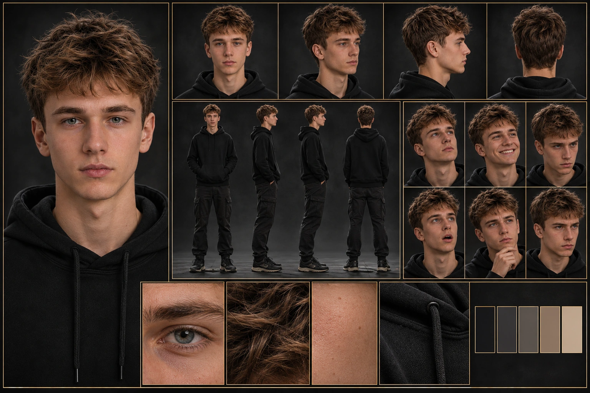

ХАРАКТЕР І ПОВЕДІНКА
Допитливість, ініціатива й гумор
У повсякденному спілкуванні Денис жвавий, товариський і легко захоплюється новими ідеями. Він пропонує друзям досліджувати невідомі сектори, перевіряти незвичні можливості або вирушати кудись без чіткого плану. Любить сперечатися, жартувати й переконувати інших, але не тримає образи через дрібниці.
З Кайром Денис швидко знаходить спільну мову й намагається познайомити його зі звичними для себе речами. Після пережитого в лабораторії в ньому помітні настороженість і недовіра до тих, хто має над ним владу. Він уважно стежить за намірами співрозмовників і прагне самостійно контролювати власні рішення.
СЮЖЕТНА ЛІНІЯ
Від звичайного життя до лабораторії
У ранніх частинах історії Денис — один із друзів Артема та Влада. Разом вони досліджують підземне місто, знайомляться з його транспортом і секторами, а згодом приймають до свого кола Кайра.
У третій книзі відкривається інша сторона його історії. Дениса утримували в лабораторії та проводили над ним жорстокі експерименти, намагаючись посилити й дослідити його ментальні здібності. Щоб вижити, він навчився приховувати справжню силу й удавати, що майже не здатен нею користуватися.
Під час останнього випробування Денис скористався нагодою, знешкодив персонал і вивів людей із комплексу під ментальний контроль. Після операції його знаходять Ольга та Сергій. Він поступово приходить до тями, проходить первинні перевірки на місячній базі й починає знайомитися з історією інших світів.
Ольга й Сергій пояснюють, що не збираються використовувати його здібності як зброю. Денису залишають право самому вирішити, чи приєднуватися до Об'єднаного людства. Це різко контрастує з лабораторією, де його особливість була лише приводом для нових експериментів.
ЗДІБНОСТІ
Ментальний вплив
Денис здатен сприймати чужі думки, емоції та наміри. Він може впливати на поведінку людини, зупиняти її рухи, присипляти та підпорядковувати своїй волі. За даними лабораторії й подіями під час звільнення, він може одночасно впливати на велику кількість людей.
Захист свідомості характерників може блокувати його вплив. Під час перевірки Ольга й Сергій не дозволили встановити ментальний контакт, і Денис визнав, що їхній захист працює.
Після років примусу Денис особливо гостро реагує на спроби контролювати його. Його здібності належать йому, а рішення про їх використання має залишатися за ним.
ВІЗУАЛЬНИЙ ПАТЕРН
Зовнішність та емоції
Зовнішність і фізичні параметри
Для візуального образу закріплено світлу шкіру, сіро-блакитні очі, коротке густе русяво-каштанове волосся з легкою хвилею та чорне худі. Точний вік і зріст у сюжетних уривках не встановлені, тому числові параметри не додаються.
Міміка й емоційний діапазон
У патерні передбачені нейтральний і зосереджений вирази, цікавість, легка усмішка, здивування, задумливість та роздратування.
Канон і джерела
Сюжетна біографія звірена з трьома наданими редакціями книг. Ранні сцени підтверджують дружбу Дениса з Артемом і Владом та їхні спільні пригоди; третя книга розкриває лабораторне минуле, здібності, порятунок Ольгою й Сергієм та перші кроки після звільнення. Зовнішність і одяг деталізовані за наданим візуальним референсом. Не підтверджені текстом числові параметри не вигадувалися.